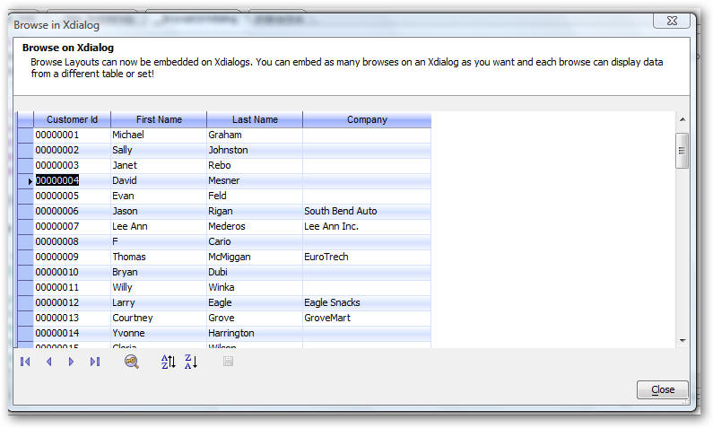
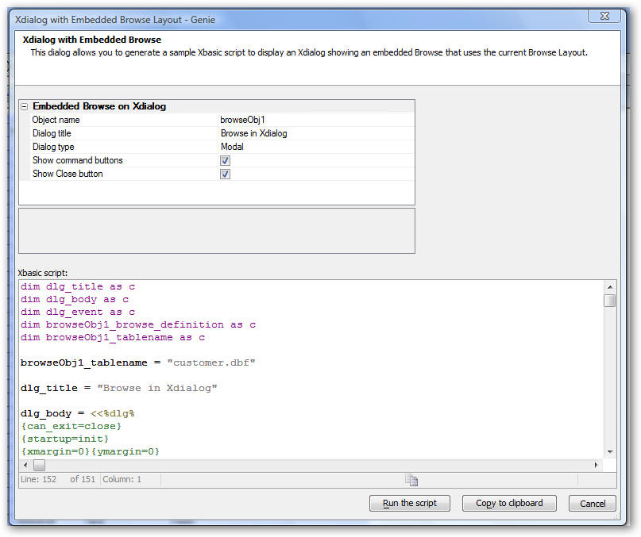
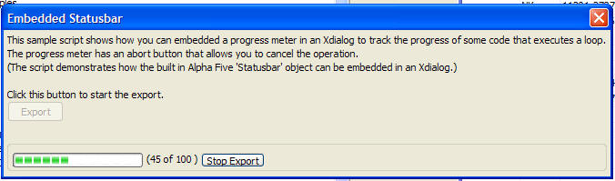
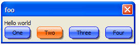
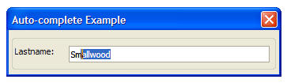
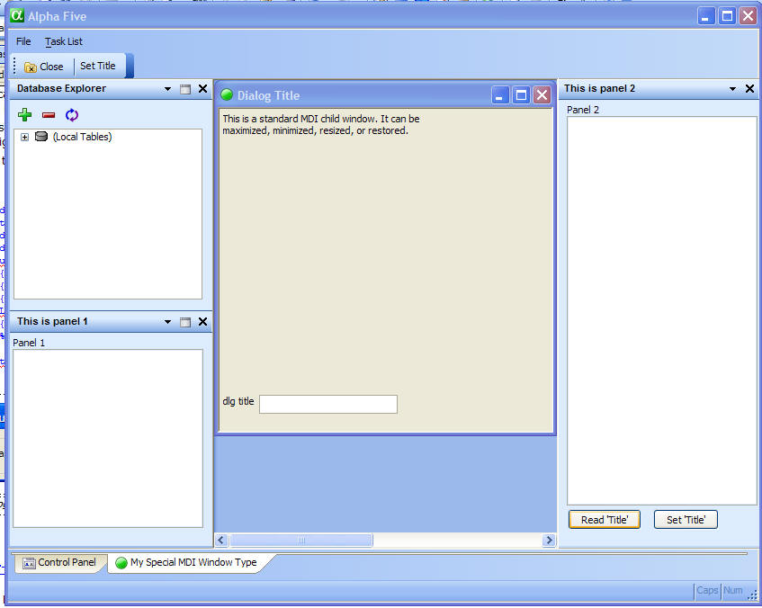
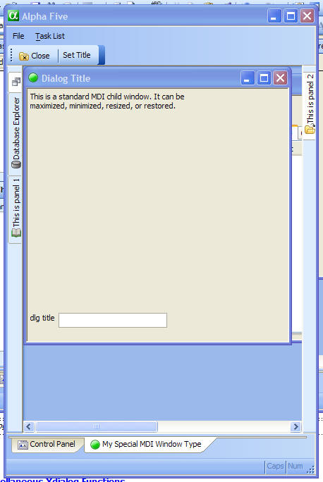

New In Xdialog
Xdialog - Header sections
It is now very easy to create a header section on an Xdialog. The
header is offset from the rest of the dialog by a white background. When
you define the header you can specify on required property (.BodyText)
and two optional properties (.HeadingText and .Image).
|
|
|
Xdialog shown with a Heading section. |

The following example Xdialog code shows how the above dialog was created:
dim pg as p
pg.BodyText = <<%txt%
To define a DataSource you need to specify a connection string to connect to your database. You also need to specify a SQL query.
%txt%
'The .HeadingText property is optional
pg.HeadingText = "Step 1. Define a DataSource"
'The .Image property is optional
pg.Image = "DataSource"
ui_dlg_box("Get Data",<<%dlg%
{XdialogTitleSection=100,5pg};
{lf};
{region}
Connection string:| [.70csname];
SQL Query: | [%MW%.70,5sqltxt];
{endregion};
{lf};
{justify=right}
<10&OK!ok> <10&Cancel!cancel>;
Xdialog Genie
The Xdialog genie now allows you to place Time and Shorttime variables on the dialog. Time variables can be represented as a textbox, a smart field, or an embedded clock. Shorttime variables can be represented as a textbox, a smart field, or an embedded clock. Date variables can now be represented as an embedded calendar.
In addition, the Xdialog Genie now supports 'HTML Forms'. An 'HTML Form' embedded into an Xdialog is essentially the same as an 'HTML Form' supercontrol on a Form. Please see the section on Supercontrols for more details.
| Date/time field represented as a smart field. |  |
| When the smart field button is clicked, the picker is opened. Notice that the picker has both a date picker and a time picker. |  |
| Shorttime variable shown as a clock embedded directly into the Xdialog. |  |
| Date field represented as a calendar embedded directly into the Xdialog. |  |
Embedded Browses on Xdialogs
You can now put embedded browse on Xdialog boxes. The Browse Definition is expressed using an XML format which Alpha Five can generate automatically for you.
The image below shows an Xdialog with an embedded browse displaying data from the customer table in Alphasports. The browse is fully functional. You can edit data, sort and resize columns, etc. Anything that you can do on a standalone browse can be done with the embedded browse.
|
 |
|
Xdialog shown with an embedded Browse. |
To create a new Xdialog with an embedded browse:
- Open the browse that you want to embed in the Browse editor.
- Edit the display properties of the browse.
- From the top menu, select Browse, Advanced, Create Xdialog with embedded Browse.
Alpha Five will display a genie giving you some options as to how the Xdialog should be generated.
|
 |
|
Genie for creating an Xdialog with embedded Browse |
To preview how the Xdialog will look, click the 'Run the script' button.
The important aspects of the generated script are as follows:
1. The Xdialog body contains this command:
{card=150,20BrowseCard_browseObj1};
This is the window that contains the embedded browse. In this case the window size is 150 characters by 20 lines. The string 'BrowseCard_browseObj1' is an arbitrary object name that gets initialized in the Xdialogs' init event.
If you wanted two embedded browse on the Xdialog (for example), then your Xdialog would contain code like this:
Browse1:;
{card=150,20BrowseCard_browseObj1};
Browse2:;
{card=150,20BrowseCard_browseObj2};
Where 'BrowseCard_browseObj2' would be the second browse that was also initialized in the Xdialog's init event.
2. The init event executes this code:
browseObj1 = a5_XdialogDefaultBrowse(dlg_title,"Browsecard_browseObj1",browseObj1_tablename,"browseObj1_browse_definition")
'browseObj1' is the name of a pointer to the browse object. This is the name that is referenced in the {card} command described above.
'browseObj1' is equivalent to 'topparent' for a standalone browse. For example, to move the record pointer to the next row you execute the standard .Fetch_Next() method. For example
browseObj1.Fetch_Next()
'browseObj1_tablename' is a variable whose value has been set to the name of the table or set that should be displayed in the embedded browse.
'browseObj1_browse_definition' is the name of a variable that contains the XML definition of the browse layout.
The appearance of layout of the browse can be adjusted by editing this XML string. In some cases editing the XML string will be easy. In other cases, using the Browse Editor to edit a browses' appearance will be more appropriate. Having edited the appearance to your tastes in the Browse editor, you can then get the XML for the browse by selecting Browse, Advanced, Show XML Definition from the Browse Editor menus.
Watch a video demonstration of how to create an Xdialog with an Embedded Browse.
Embedded Statusbar
Normally, when an Xbasic script executes a long-running loop, progress is written to the statusbar at the bottom of the screen. Now, the statusbar object can be embedded directly in the Xdialog, allowing for much more intuitive user interfaces. For a working example if the dialog shown below see the 'What's New in V9' section in the sample 'Learning Xdialog' database that ships with Alpha Five.
|
 |
|
Xdialog with an embedded statusbar. |
To embed the statusbar in an Xdialog, use the {statusarea=width,height} command. For example:
dim dlg_title as c
dlg_title = "Progress"
ui_modeless_dlg_box(dlg_title,<<%dlg%
{sp=.5}{statusarea=50,1};
%dlg%,<<%code%
%code%)
The standard statusbar methods (e.g. statusbar.set_text(), statusbar.percent(), etc. will all write to the embedded statusbar on the Xdialog, rather than the built-in statusbar at the bottom of the main Alpha Five window.
Watch a video demonstration of an Xdialog with an embedded statusbar.
Stylesheets for Xdialog
You can now define stylesheets (similar to CSS for HTML files) for certain controls on Xdialogs. Stylesheet support is limited in this version, but will be greatly expanded in future versions.
The syntax is the same as CSS syntax and you can use the CSS builder in Alpha Five to help you create the stylesheets. To get the builder, right click in the Code editor and select Genies, CSS Style builder from the menu.
The image below shows an Xdialog in which a stylesheet had been defined to control the appearance of buttons on the Xdialog. Notice that the mouse if over button 'Two', so the $Button:hover style is used.
|
 |
|
Xdialog with buttons styled using a stylesheet. |
ui_modeless_dlg_box("foo",<<%dlg%
{style}
$Button {
font:Arial,10,b;
border-shape:large-rounded;
line-style:single;
line-width:1;
line-color:Blue;
fill-style:Gradient horizontal glass;
fill-color:Light Blue;
fill-accent-color:White;
shadow-style:thick soft;
}
$Button:hover,$Button:focused {
font:Arial,10,b;
border-shape:large-rounded;
line-style:single;
line-width:1;
line-color:Orange;
fill-style:Gradient horizontal glass;
fill-color:Orange;
fill-accent-color:White;
shadow-style:thick soft;
}
$Button:pressed {
font:Arial,10,b;
border-shape:large-rounded;
line-style:single;
line-width:1;
line-color:Blue;
fill-style:Gradient horizontal glass;
fill-color:White;
fill-accent-color:Blue;
}
{endstyle};
Hello world;
%dlg%)
Here is a more elaborate example:
|
|
|
Xdialog with a stylesheet. |

ui_modeless_dlg_box("foo",<<%dlg%
{style}
$Button {
font:Arial,10,b;
border-shape:large-rounded;
fill-style:Gradient horizontal glass;
fill-color:Light Blue;
fill-accent-color:White;
shadow-style:medium soft;
}
$Button:hover,$Button:focused {
font:Arial,10,b;
border-shape:large-rounded;
line-style:single;
line-width:1;
line-color:Orange;
fill-style:Gradient horizontal glass;
fill-color:Orange;
fill-accent-color:White;
shadow-style:medium soft;
}
$Button:pressed {
font:Arial,10,b;
border-shape:large-rounded;
line-style:single;
line-width:1;
line-color:Blue;
fill-style:Gradient horizontal glass;
fill-color:White;
fill-accent-color:Blue;
}
$frame {
fill-style:Gradient horizontal;
fill-color:White;
fill-accent-color:light Blue;
shadow-style:thin soft;
}
$frame.caption {
fill-style:Gradient horizontal;
fill-color:White;
fill-accent-color:light Blue;
}
$line {
line-style:single;
line-width:2;
line-color:Light Blue;
}
{endstyle};
This xdialog has styled frames, lines and buttons;
{frame=3,6Hello World};
First name:|[.40fname]|;
Last name:|[.40lname];
{line=2};
{cellspillover=on}
%dlg%)
{Title} Command
The {title} command lets you set the title of a dialog independently of the value set in ui_dlg_box(), or ui_modeless_dlg_box() command.
ui_dlg_box("Title",<<%dlg%
{title=Title set by 'Title' command}
{lf};
Name: [.60name];
%dlg%)
Auto-complete Input Controls
You can create input boxes with auto-complete. As you type values into in input box, Alpha Five looks to see if there are any values in a specified field in a table that start with the characters that you have entered and, if so, it puts the value into the text box as a suggestion.
The sample Xbasic shown below produces the dialog shown in the image. The image shows what is shown in the input control after the user has typed 'sm'. Notice how the letters typed by the user are not highlighted. Alpha Five has found the closest match to these characters and suggested 'Smallwood' as the value for the field.
Note the use of the 'value' argument as the second parameter in the .suggest() method shown below. 'Value' is a special parameter that references the value that the user has typed into the input control.
dim t as p
t = table.open("customer")
dim cityname as c
dim lastname as c
ui_dlg_box("Auto-complete Example",<<%dlg%
{wrap=100}
{frame=1,1}
{region}
Lastname: | [%A=t.suggest("lastname",value)%.50lastname];
{endregion};
%dlg%)
t.close()
|
 |
|
Xdialog with an auto-complete input control. |
User-Defined Dock Panels
Dock Panels were introduced in Version 8. They are used in the Script Editor, HTML Editor, and in all of the Layout Editors (i.e. Form Editor, Report Editor, etc.).
Now, you can define your own MDI Xdialogs with Dock Panels.
A Dock Panel is actually very similar to a modeless Xdialog, except that it is launched using the ui_dlg_panel() function, rather than the ui_modeless_dlg_box() function.
When the MDI window looses focus, the Dock Panels are automatically hidden and when the MDI window regains focus, the Dock Panels are automatically shown. When the MDI window is closed, the Dock Panels are closed and when the MDI Window is reopened, the Dock Panels are automatically opened in their previous positions.
See the sample 'Learning Xdialog' database for examples of Xdialogs with user-defined Dock Panels.
|
 |
|
Xdialog that displays a MDI window with user-defined Dock Panels in their open position. |
|  |
|
Same MDI window as the above image, but this time showing the Dock Panel in their collapsed state. |
Watch a video demonstration of an Xdialog with User-Defined Dock Panels.
Miscellaneous Xdialog Functions
ui_dlg_control_embedded_get() - Returns the name of a child Xdialog given the name of the parent Xdialog and a piece of identifying text from the embedded control. For use when a dialog contains a child dialog created using the {beginembedded} command. See Learning Xdialog for an example.
Example:
Run this script to create a modeless Xdialog:
ui_modeless_dlg_box("Dialog with Child Dialog",<<%dlg%
{beginembedded=100,20}
Hello world;
{endembedded}
%dlg%)
Now, from the Interactive Window:
? ui_dlg_control_embedded_get("Dialog with Child Dialog","{beginembedded=")
= "Window#4162e"
name = ui_dlg_control_embedded_get("Dialog with Child Dialog","{beginembedded=")
'Now replace the contents of the embedded window with something else:
ui_modeless_dlg_box(name,"replace contents")